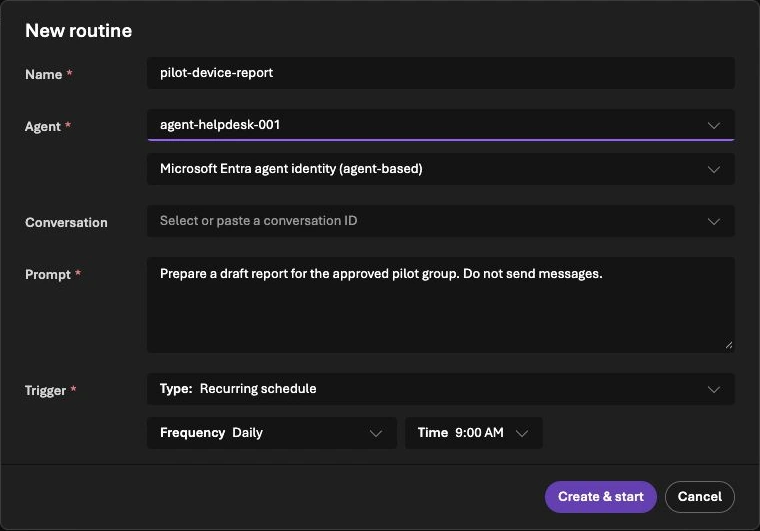

Foundry Routines: Schedule Agents Without Duplicate Work
A report arrives twice on Monday morning. Both messages are correct. The automation still failed, because someone now has to determine whether the second message contains new work.
Foundry Routines make scheduled agents easier to start. The work around the schedule still needs a job identity, a clear permission boundary and a record of what was delivered. I would build those around a small read-only report before scheduling anything that changes a device or contacts a customer.
This guide combines the current Routines setup path with a locally tested SQLite example. The Azure configuration below is a prepared example, not a routine enabled in my tenant. References were checked on 20 October 2026.
Decide what the routine starts
Routines are generally available in the September Foundry release. They can start an agent from a schedule, timer or supported event. The agentâs own reminder tool remains a separate preview feature. Release note
My example is a daily report for an Intune pilot group. The agent reads the permitted groupâs evidence, produces a draft and records any coverage gaps. Sending the report is a separate decision.
Keep three identifiers separate:
| Record | Example | Purpose |
|---|---|---|
| Routine dispatch | Platform-generated ID | Find a particular invocation and its telemetry |
| Business job | pilot:2026-10-20:report-v1 |
Recognize the same requested work after a retry |
| Delivery | Destination and message/receipt ID | Establish whether a particular report was sent |
A new dispatch ID does not necessarily mean new business work. Conversely, reusing yesterdayâs business key for todayâs report would incorrectly suppress a valid job.
Prepare a disabled schedule and inspect its identity


The documented prerequisites include a deployed prompt or hosted agent and the required project role. Check the current regional availability and encryption constraints before choosing Routines for a workload. Workflow agents are not a supported target; CMK requirements need particular attention. Routines prerequisites
With the Azure Developer CLI routines extension, a prepared manifest can look like this:
name: pilot-device-report
description: Prepare a read-only pilot report for review.
enabled: false
triggers:
weekday-morning:
type: schedule
cron: "0 8 * * 1-5"
time_zone: Europe/Berlin
action:
type: invoke_agent_responses_api
agent_name: pilot-report-agent
input: Prepare a draft report for the approved pilot group. Do not send messages.Save it as routine.yaml. After reviewing the target project and agent, the documented creation command is:
azd extension install azure.ai.routines
azd ai routine create --file routine.yamlThis creates a cloud resource if you run it. Keep enabled: false until the acceptance checks pass. Inspect the saved schedule and time zone in the portal; a copied UTC schedule can shift the local business hour at daylight-saving changes.
The manifest uses cron; the REST/SDK trigger field is cron_expression. Do not mix the two formats. Use the current Routines guide for the client you selected.
By default, dispatch uses the agent identity. Delegated tools can require an explicit creator-identity choice at creation. That refers to the routine creator, not whichever user later edits it. Event-connector authentication is another separate identity. Record all of these before granting a scheduled agent useful access. Routine authorization model
Make the business job idempotent
Idempotent handling means repeating the same request does not repeat its effect. Distributed workers can receive work more than once, so the processing logic must recognize an already handled item. Competing-consumers pattern
The following local example uses a unique key and a payload hash. Save it as job_check.py; run it with python3 job_check.py:
import hashlib
import json
import sqlite3
import tempfile
from contextlib import closing
from pathlib import Path
def accept(path, key, payload):
digest = hashlib.sha256(json.dumps(payload, sort_keys=True).encode()).hexdigest()
with closing(sqlite3.connect(path)) as db, db:
db.execute("CREATE TABLE IF NOT EXISTS jobs (key TEXT PRIMARY KEY, digest TEXT, state TEXT)")
db.execute("BEGIN IMMEDIATE")
row = db.execute("SELECT digest FROM jobs WHERE key=?", (key,)).fetchone()
if row:
if row[0] != digest:
raise ValueError("same job key with changed inputs")
return False
db.execute("INSERT INTO jobs VALUES (?, ?, 'accepted')", (key, digest))
return True
with tempfile.TemporaryDirectory() as folder:
path = Path(folder) / "jobs.db"
job = "pilot:2026-10-20:report-v1"
payload = {"group": "pilot", "window": "2026-10-20"}
print(accept(path, job, payload))
print(accept(path, job, payload))Expected output is True, then False. The second call represents the same job and is not accepted again. Reusing the key with a different payload raises an error instead of silently returning an unrelated previous result.
Generate the business key from trusted scheduler/application data. Do not ask the language model to invent the key that protects the workflow from duplication. For a production database, retain the same uniqueness and transaction properties and define how long completed keys remain valid.
Treat delivery as another operation
For the report, I would use an application-owned state sequence:
accepted â running â ready â sending â delivered
â uncertainThese are proposed application states, not Foundryâs native run statuses. If the messaging service accepts a message but the connection drops before a receipt returns, mark delivery uncertain. Do not blindly resend the report.
Persist the report and its pending delivery record together. A transactional outbox is one way to avoid losing the handoff between storing a result and queuing its delivery. It still needs idempotent consumers and destination-specific handling. Transactional outbox pattern
In my local tests, twenty competing acceptance attempts produced one accepted job. State-transition tests also refused a second claim and refused to replay a delivery marked uncertain. That does not prove exactly-once behavior in Teams or email; those destinations need their own receipt and retry checks.
Review the failures before enabling the schedule
| Failure to inject | Expected evidence |
|---|---|
| Same job starts twice | One accepted business job |
| Source read fails | Draft identifies missing coverage; no fabricated complete report |
| Creator loses required access | Visible failure assigned to an owner |
| Worker restarts after saving a draft | Existing result is found rather than regenerated silently |
| Delivery acknowledgment disappears | Uncertain state and manual reconciliation |
| Inputs change but the key is reused | Conflict instead of a false duplicate success |
A completed routine run can mean that the downstream API accepted dispatch, while the agentâs background work is still running. Inspect both the platform run and the business result before calling the workflow successful. Dispatch and retry behavior
For the first cloud test, use the documented manual dispatch with no external sending. Check the saved draft, sources, job key and trace. Enable the recurring schedule only after that path works and the owner has approved its scope.
The same approach fits an Intune reporting workflow. The choice between a deterministic scheduled report and an agent depends on whether interpretation is useful. If the output is a fixed query and table, keep it simple.